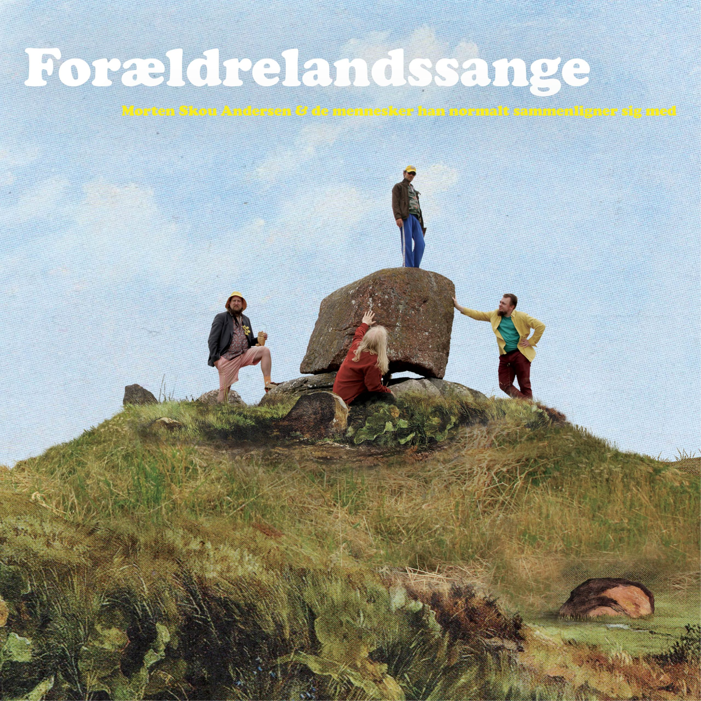
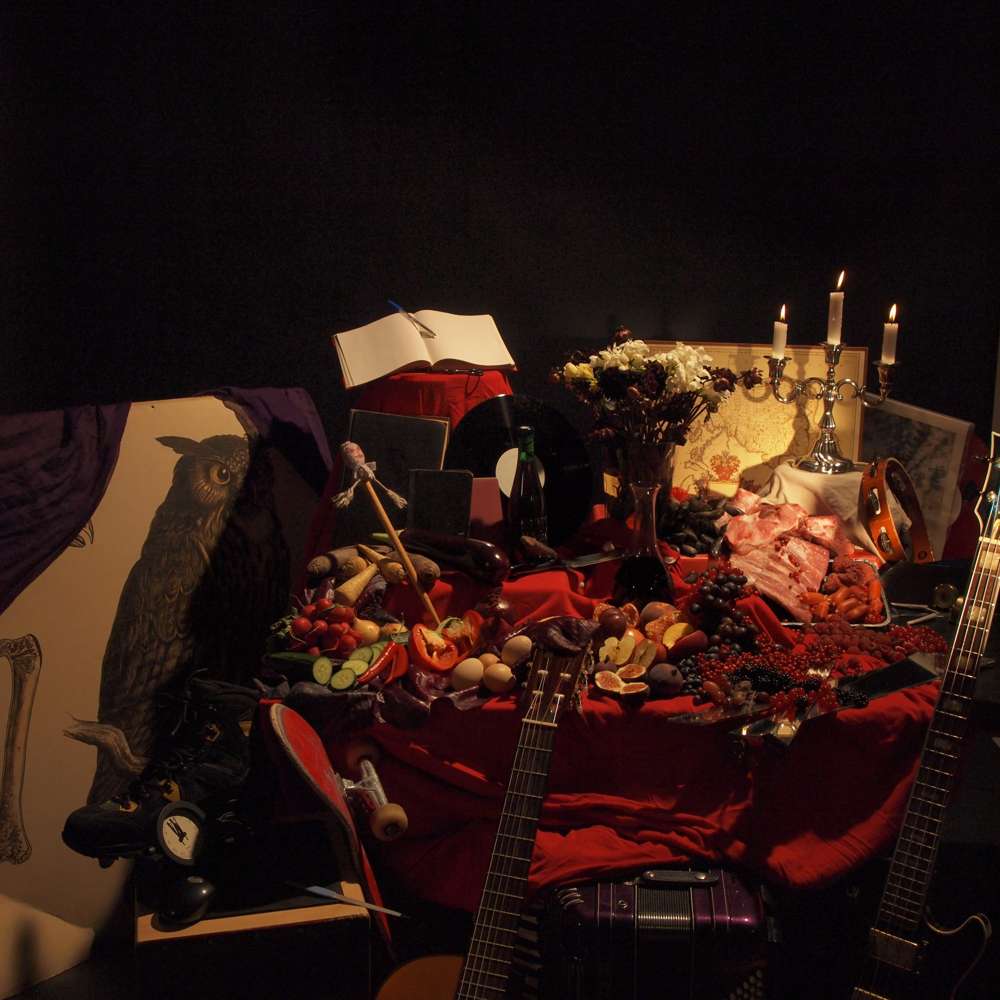

ALBUM

ForældrelandssangeAlbum, 2023
BoligindretningAlbum, 2018
 DigressionerAlbum, 2015
DigressionerAlbum, 2015

Varme hænder koldt hjerteAlbum, 2012 Morten Skou Andersen & de mennesker han normalt sammenligner sig medAlbum, 2009
Morten Skou Andersen & de mennesker han normalt sammenligner sig medAlbum, 2009
 I fingreneAlbum, 2007
I fingreneAlbum, 2007